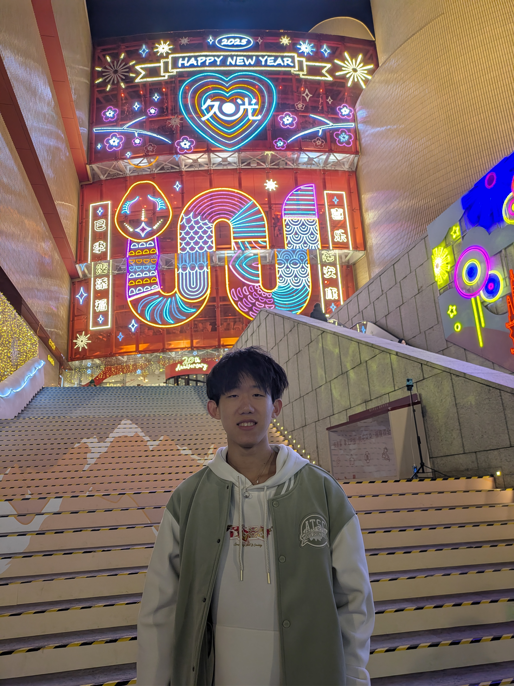

About Me
Hello! My name is Albert Zhang, and I am currently pursuing a dual degree in Computer Science and Biochemistry & Molecular Biology at Boston University. I have a deep passion for both technology and science, and I believe that the intersection of these fields holds incredible potential to solve some of the world's most pressing challenges.
Throughout my academic career, I have developed a strong foundation in computer science, particularly in areas such as machine learning, web development, and data analysis. Additionally, my background in biochemistry has provided me with a unique perspective on solving complex problems that require an interdisciplinary approach.
In my spare time, I enjoy working on personal projects, contributing to open-source software, and collaborating with others to create innovative solutions. I am always eager to learn and grow as a professional, and I am excited about the future possibilities that lie ahead.